Many currents met here.
The history of AI has no single line to the large language model. It is a convergence of ideas from unrelated fields that were never intended to meet. Statistical methods developed by astronomers to map the stars now weigh the next word in a sequence. GPU architectures designed for video games provide the parallel computation neural networks need.
The deeper history is a history of abstraction: human effort drawn away from the direct task and handed to a mechanism. It begins roughly 3.3 million years ago with the first stone tools, continues through the wheel and Heron of Alexandria’s programmable cart, and crosses from the physical to the cognitive when thought itself becomes a formal calculus a machine can run.
The machine is the ultimate indirection.
The wheel abstracts movement; the computer abstracts thought. Both remove the human from the raw labour while keeping the human in charge of the mechanism.
Follow the fuse.
Pick a point on the line and pull that thread. Dates are approximate where the evidence is.
Twelve turning points · demo 01
Drag the line, scroll sideways, or use the arrow buttons. Select a node to read its story.
Counting leaves the skull.
The first mathematical technology was not a symbol but an object. The Lebombo bone (c. 43,000–42,000 years ago) carries 29 notches. The Dolní Věstonice wolf bone (c. 27,000) carries 55 notches in two groups of 30 and 25. The Ishango bone (c. 18,000 BCE) carries grouped notches that may encode a tally, a lunar calendar, or something else; its prime-number column is suggestive, not settled. The same impulse — outsource counting to a physical object — appears independently in Africa and Europe.
The Salamis Tablet (c. 300 BCE) is the oldest surviving counting board: a marble slab with etched lines and pebbles (calculi). It maps numbers to grid coordinates, uses a rule-based physical system for arithmetic, and stores intermediate sums outside the head. The word calculus comes from the pebbles.
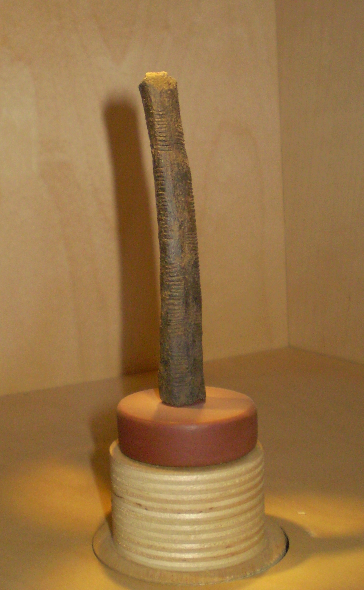

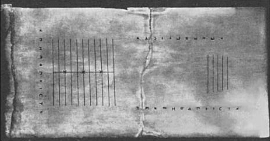

The Antikythera mechanism (c. 200–60 BCE, recovered in 1901) takes the next step: at least 30 meshing bronze gears model the sky, predicting astronomical positions and eclipses decades in advance. For over a millennium, no equally complex geared technology is known in the West. Computation also has roots in mechanical simulation.
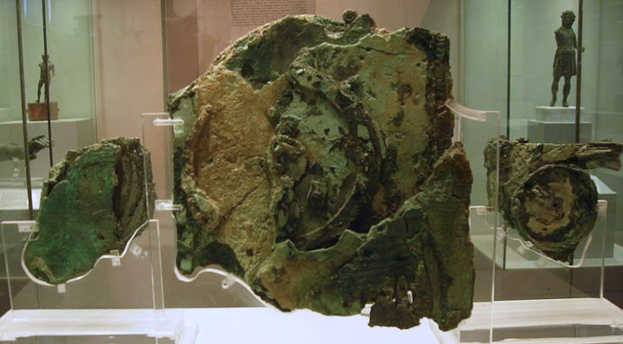

External memory is the first abstraction.
A notch on a bone is a thought stored outside the thinker. Every database, cache, and context window is a descendant of that move.
Reason and speech become calculi.
The number systems that feed the modern machine grew out of several separate
inventions: place value (Babylonian, c. 2000 BCE),
zero as a number with arithmetic rules (Brahmagupta, 628 CE),
negative quantities (Han-dynasty Chinese linear-equation
texts), and decimal fractions (Stevin, 1585, building on
earlier Arabic work). Pingala’s Sanskrit prosody (c. 3rd–1st century BCE)
uses a binary-like scheme for metres; Leibniz later formalised binary
notation. Modern hardware inherits the positional idea, then makes its own
engineering choices. A binary integer has a fixed width and a finite range. A
floating-point number stores a sign, an exponent, and a significand, so it
approximates real numbers with limited precision; the usual float
value for 0.1 is not exactly one tenth. Most processors follow the IEEE 754
conventions for these formats.
In the same long arc, reasoning becomes a formal system. Aristotle’s syllogism separates the structure of an argument from its content. Pāṇini’s Aṣṭādhyāyī gives Sanskrit a fully generative grammar of metarules, transformations, and recursion — a compiler-like contract centuries before the computer. Ramon Llull’s Ars Magna (1305) turns concentric wheels of concepts to generate every logically possible combination: the first documented attempt to mechanise thought. George Boole’s algebra (1854) then makes logic calculable, and Frege and Russell spend the next decades trying to ground mathematics in it.
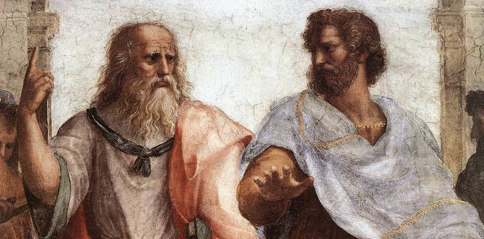

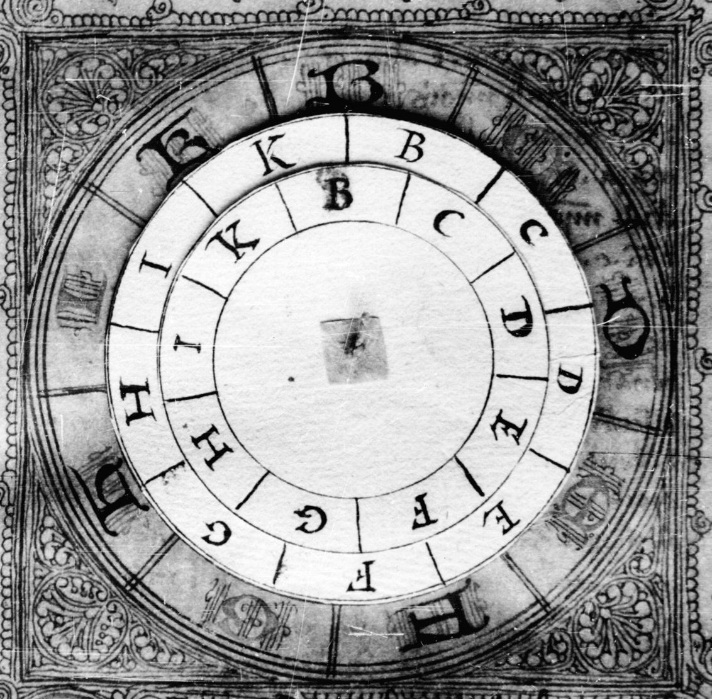
Logic becomes something you can turn.
A syllogism, a grammar, and a wheel of concepts are all attempts to make valid reasoning mechanical — long before there is a machine to run it.
The machine learns to follow a stored plan.
Leibniz builds a calculating machine and formalises binary notation. Babbage designs the Analytical Engine, with a store, a mill, and punched-card input. Ada Lovelace sees further than the machine’s builder: the Engine can manipulate symbols, not only numbers, and she writes the first published algorithm intended for it.
The 20th century turns the plan into hardware. Konrad Zuse’s Z3 (1941) is the first functional, programmable, fully automatic digital computer, built from 2,000 telephone relays; he also designs Plankalkül, an early high-level language. Howard Aiken’s Harvard Mark I (1944) is a 50-foot decimal relay machine. Turing’s 1936 universal machine supplies the theory; his ACE and Bletchley work supply the practice. Shannon’s 1937 master’s thesis shows that Boolean algebra can be realised in relay circuits — the bridge from logic to electronics. Von Neumann’s stored-program design (1945) makes “reprogramming” a matter of software rather than rewiring.

.jpg){kind=link}
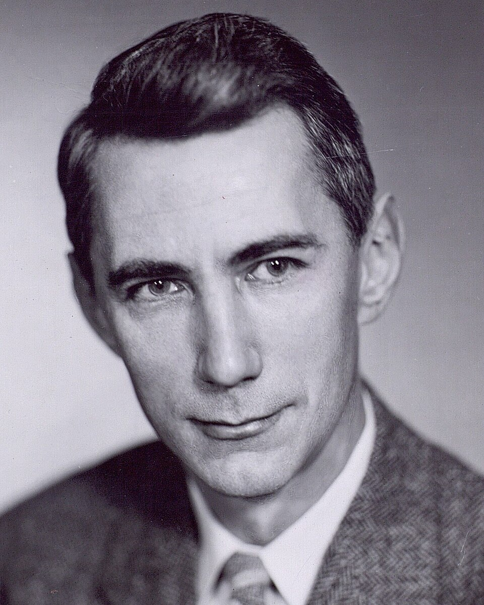
.jpg){kind=link}
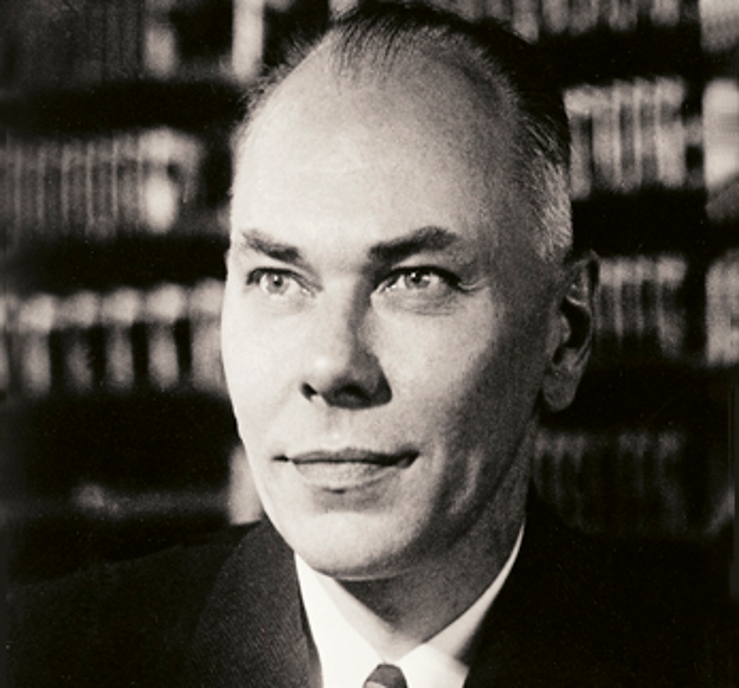

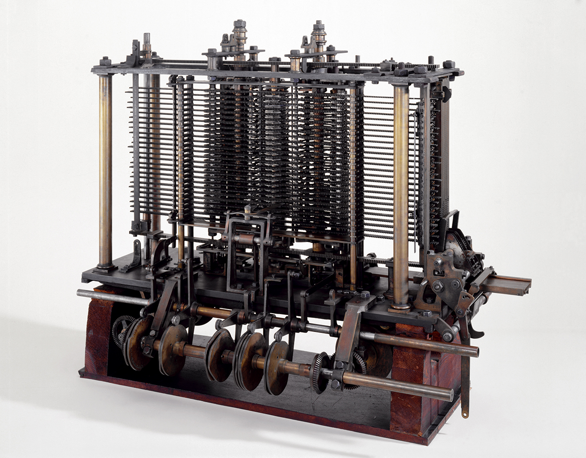
.jpg){kind=link}
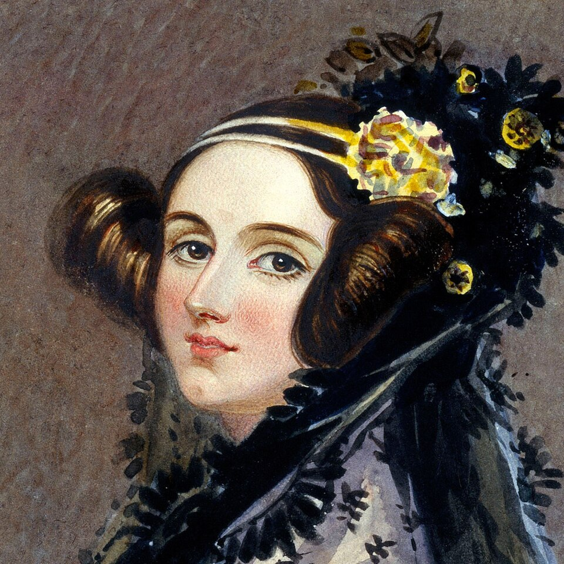

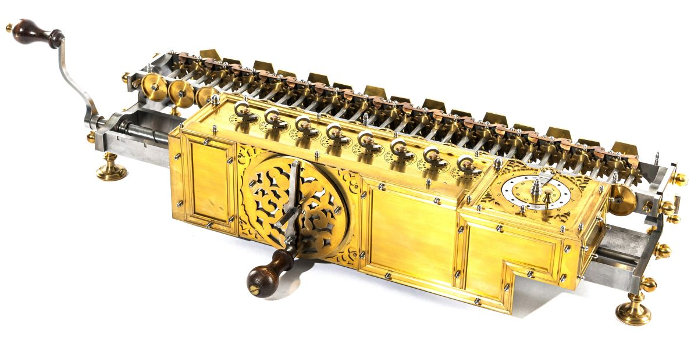
_06.jpg){kind=link}
The stored program separates the machine from its behaviour.
Once instructions live in the same memory as data, a computer can be changed by writing, not by rebuilding. Software is born.
A machine that learns from its mistakes.
The first artificial neuron came from an unlikely pair. Warren McCulloch was a neuropsychiatrist, philosopher, and poet who ran a lab under the sign “Experimental Epistemology” and asked, “What is a number, that a man may know it, and a man, that he may know a number?” Walter Pitts was a self-taught logician who had read Principia Mathematica at twelve, written to Bertrand Russell, and run away from home at fifteen to hear Russell lecture in Chicago. They met there, found a shared hero in Leibniz, and began to model the brain as a logical calculus.
Their 1943 paper, “A Logical Calculus of the Ideas Immanent in Nervous
Activity,” appeared in the Bulletin of Mathematical Biophysics, not
in a physiology journal. It made five assumptions: a neuron fires all-or-none;
a fixed number of excitatory synapses must be active within the period of
latent addition; the only significant delay is synaptic; an inhibitory synapse
absolutely prevents firing; and the structure of the net does not change with
time. The neuron fires when the excitatory input reaches its threshold and no
inhibition is present. The model counts synapses. The familiar
y = σ(Σ wᵢxᵢ − θ) belongs to the later perceptron; McCulloch and
Pitts had no learned weights.
The paper works in both directions. Given a network, you can read off the propositions its activity realizes; given a logical expression, you can build a network that realizes it. Networks without loops compute Boolean functions. Networks with loops can hold a state, and McCulloch and Pitts argued that such a net, with a tape and scanners, can compute what a Turing machine computes. The loop was the hard part: a signal that circles back seems to make time run backwards. Pitts’s way out was clock arithmetic. Inside a loop, “before” and “after” lose their meaning; the signal records that an event happened, not when. McCulloch called the result “an idea wrenched out of time” — a memory.
The paper reached the hardware of the next decade. Von Neumann’s 1945 EDVAC report, the first published description of the stored-program computer, cited exactly one paper — this one — and proposed building the machine from McCulloch–Pitts-style logic gates, with Pitts’s loops as memory. At the 1948 Hixon Symposium, von Neumann gave the nets a wide audience and called their theorems “probably the most significant result obtained with the axiomatic method up to now.” Pitts, the runaway logician, became the hinge between McCulloch’s physiology and von Neumann’s computer.
The collaboration was also a friendship. McCulloch invited the homeless Pitts to live with his family; Pitts called the house home for the rest of his life. McCulloch called him his “bootlegged collaborator.” Both wrote poetry. Pitts struggled with depression, broke with Norbert Wiener, and died in 1969 at forty-six; McCulloch died four months later. The 1943 neuron outlived them both.
When an axon of cell A is near enough to excite a cell B and repeatedly or persistently takes part in firing it [...] some growth process or metabolic change takes place in one or both cells such that A’s efficiency, as one of the cells firing B, is increased.
Donald O. Hebb, The Organization of Behavior (1949), p. 62The slogan is “neurons that fire together, wire together.” The SNARC (1951) was the first physical neural network. Then, in 1958, Frank Rosenblatt introduced the perceptron: a system that adjusted its weights in response to errors. The Mark I Perceptron was constructed between 1958 and 1960 and publicly demonstrated in 1960: a 20×20 grid of 400 photocells formed its retina, and electric motors turned the potentiometers that held the weights. Its follow-on, Tobermory, was designed for speech recognition.
The press heard “a machine that will walk, talk, see, write, reproduce itself and be conscious of its existence.” The science heard a learning rule, Δw = η · (target − output) · input, that turns error into a weight change. Minsky and Papert’s Perceptrons (1969) then showed the limits of a single-layer network — famously, XOR — and the first winter began. The idea survived in the margins.
The bibliography was a giveaway
The 1943 paper cites Carnap’s Logical Syntax of Language, Hilbert and Ackermann’s Grundzüge der theoretischen Logik, and Russell and Whitehead’s Principia Mathematica. It cites no neurophysiologist. The physiology sits in the assumptions; the argument is in the logic.


The perceptron was a physical machine.
Motor-driven potentiometers whose resistance was the weight, wired to photocells, nudged after every mistake. Rosenblatt’s work is the hinge between “a program does what it is told” and “a model learns from what it sees.” He died in a sailing accident in 1971, two years after the critique that helped cool the field.
The descendants of that machine are in every transformer today. The perceptron ran into the limits of one layer, limited data, and limited compute. Learning from data survived the disappointment.

_(20897323365).jpg){kind=link}
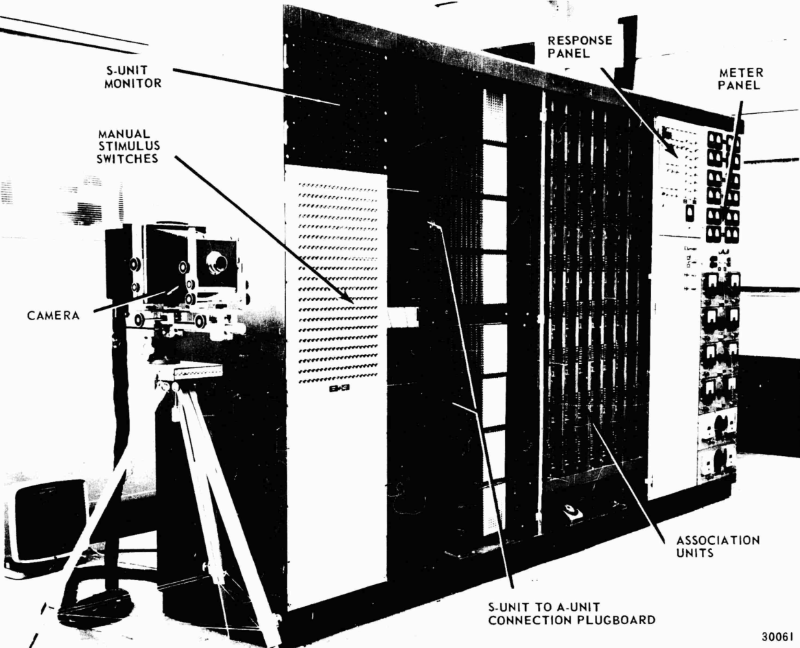

Around the perceptron, a second tradition grows. Cybernetics — Wiener’s feedback, control, and communication — treats the machine and the animal as versions of the same loop. Ashby’s Homeostat (1948) re-wires itself until its behaviour settles; Grey Walter’s tortoise seeks light and avoids obstacles with a handful of valves; Bateson defines information as “a difference that makes a difference.” The vocabulary of modern AI — feedback, adaptation, signal, noise — is largely theirs.
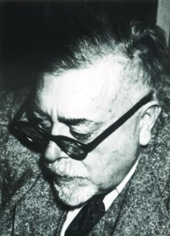

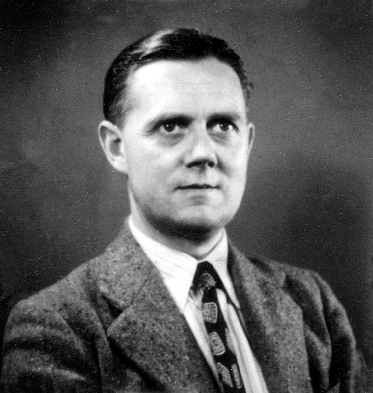
.jpg){kind=link}
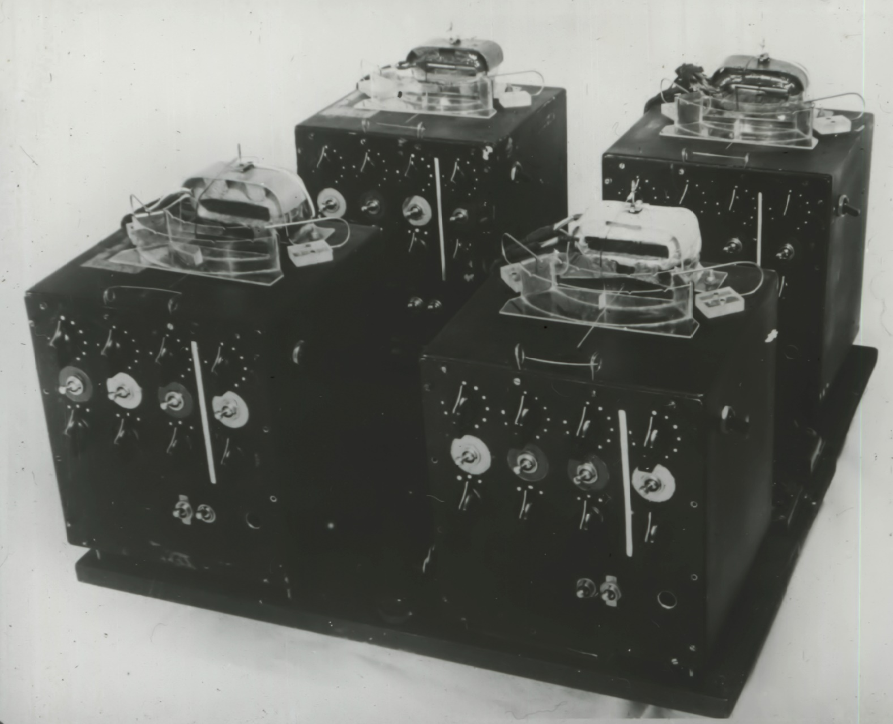

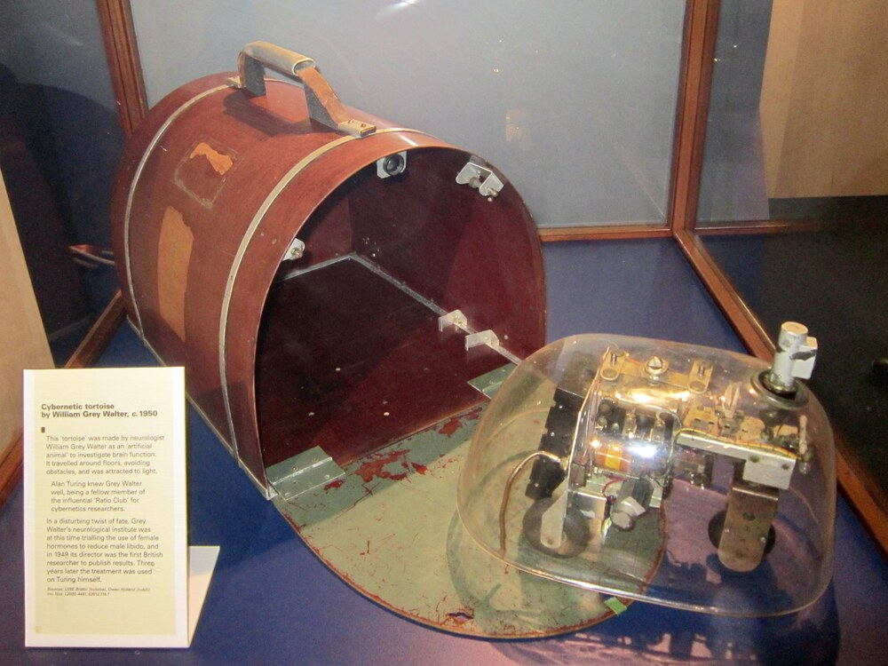
.jpg){kind=link}
Learning is error correction.
The perceptron does not need a rule for every case. It needs an error signal and a way to change its weights. That is the seed of every trained model.
Promise, winter, quiet accumulation.
The Dartmouth workshop of 1956 names the field. Symbolic AI builds the Logic Theorist, GPS, expert systems, planners, and microworlds such as SHRDLU. Then it hits the frame problem and the limits of hand-coded rules. Funding freezes in the first AI winter; connectionism returns in the 1980s; a second winter follows. Deep Blue beats Garry Kasparov in 1997, a triumph of search and evaluation in a narrow, hand-tuned domain.
The return of neural networks came as a stack of changes: backpropagation, larger datasets, GPUs, better regularization. AlexNet wins ImageNet in 2012. AlphaGo defeats Lee Sedol in 2016. In 2017, “Attention Is All You Need” replaces recurrence with self-attention, making the path between distant tokens one step and the computation parallel. ChatGPT (2022) turns the next-token loop into a public interface. The ideas are old; the scale, the data, and the engineering are new.

_vs_AlphaGo_(W)_-_Game_4.jpg){kind=link}

.jpg){kind=link}
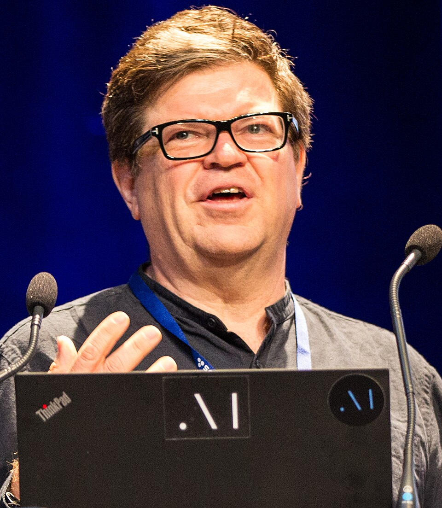
.jpg){kind=link}

Hinton, LeCun, and Bengio share the 2018 Turing Award for deep learning. Their work — backpropagation, convolutional networks, neural language models — is the bridge between the perceptron’s promise and the transformer’s scale. The line from Rosenblatt to GPT bends through two winters, and it stays continuous: the same bet on learning from data, carried through both.
The return was scale plus a better learning method.
Backpropagation, data, GPUs, and architectural luck compounded. The winters belonged to the story too.
Attention, then pretraining, then scale.
The 2017 paper “Attention Is All You Need” was written to improve machine translation. Vaswani and his coauthors replaced the step-by-step recurrence of earlier sequence models with self-attention: in one layer, every token can look at every other token, and the computation for all positions runs in parallel. The path between two distant tokens becomes a single hop. That helps long-range dependencies, and it fills a GPU far better than a loop over the sequence.
The mechanism is a learned routing operation. Each token is projected into a query, a key, and a value. The query of one token is compared with the keys of the others; the scores are scaled, passed through a softmax, and used as weights to mix the values. A causal mask in a decoder hides future tokens, so the model cannot see the answer it is supposed to predict. Several heads run in parallel, each in its own subspace, and their outputs are combined.
Attention is one half of the block. Each sublayer is wrapped in a residual connection and a normalization step: the branch computes an update, and the update is added back to a shared running vector. The feed-forward network then transforms each position on its own, expanding the vector, applying a nonlinearity, and contracting it again. Attention moves information between positions; the feed-forward network computes with it.
Two branches grew from the same architecture. BERT (Devlin et al., 2018) kept the encoder, removed the causal mask, and trained with masked language modeling: hide a random selection of tokens and predict them from both sides. That gives deeply bidirectional representations. After pretraining on a large corpus, BERT could be fine-tuned with a small labelled dataset and set new records on many language tasks. It made the recipe pretrain, then fine-tune the default.
GPT took the other branch: a decoder-only transformer trained autoregressively on the next token. GPT-2 (2019) showed that a large model could perform some tasks zero-shot, from a prompt alone. GPT-3 (Brown et al., 2020), with 175 billion parameters, showed that scale could produce a flexible few-shot learner. The same block, two contracts with the data: BERT sees both sides and fills blanks; GPT sees only the past and predicts the next token.
The recipe then became an engineering programme. ULMFiT supplied the three-step template: pretrain on general text, fine-tune on the target domain, fine-tune on the task. RoBERTa showed that BERT had been undertrained, and that more data with dynamic masking improved it. ELECTRA changed the objective from filling blanks to detecting replaced tokens, which gives a training signal at every position. T5 turned every task into text-to-text. Chinchilla (Hoffmann et al., 2022) showed that, for a fixed compute budget, many models were too large for the amount of data they saw; a smaller model trained on more tokens can do better. LLaMA applied that lesson and released models that could run on ordinary hardware, which helped the open-weight ecosystem grow.
The final layer is post-training. A raw next-token predictor is not yet a helpful assistant. RLHF — reinforcement learning from human feedback — trains a reward model on human preferences and then optimizes the language model against it. InstructGPT (Ouyang et al., 2022) described the recipe, and ChatGPT turned it into a public interface. The model still predicts tokens; the difference is that the distribution has been shaped toward answers people find useful, honest, and harmless.
Why the same block can be an encoder or a decoder
The mask and the training objective decide the contract. BERT’s encoder reads the whole sentence and fills masked gaps. GPT’s decoder reads only the past and predicts the next token. An encoder–decoder model such as the original transformer reads the source and generates the target. The block is shared; the information flow is different.
The transformer made context parallel.
Recurrence forced the model to carry the past through a chain. Self-attention lets every token ask every other token what it needs — and that one change made both long-range context and large-scale training practical.
There is a second, smaller alphabet underneath all of this: the tokenizer. A model does not read words or letters; it reads a fixed table of fragments, usually built with byte-pair encoding. Common words become one token; rare words split into pieces. The table is fixed before training, so it quietly decides what is cheap, what is expensive, and what the model can represent at all. The tokenizer lab shows the mechanics.
A collective, uneven climb.
The standard story is a parade of famous names and sudden breakthroughs. The actual history is slower and more collective. Counting devices appear independently in southern Africa, central Europe, and central Africa. The first neural network paper lands in a biophysics journal. The perceptron is announced by the U.S. Navy, criticised, and survives in the margins until the hardware and the data catch up.
There were winters: periods when the promises outran the results and the money left. There were also quiet accumulations — the stored-program idea, the transistor, the GPU, the dataset, the optimizer — without which the same algorithm would be a curiosity. The transformer condensed a very long fuse.
For the material and human history the standard parade leaves out — the labour, the mines, the women who wrote the first programs, the technicians who wired the machines — continue with the Untold History of AI. That is the other half of this story.